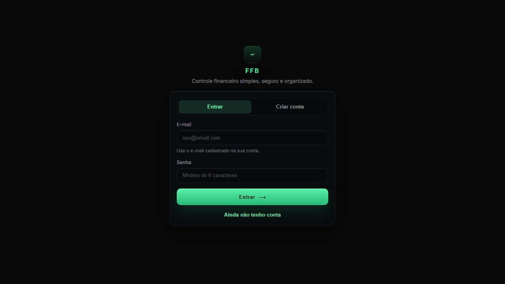

Uma aplicação web para registrar receitas, acompanhar despesas, criar metas e transformar dados financeiros em decisões mais claras.
A dor é comum: muitas pessoas sabem quanto recebem, mas não enxergam com clareza para onde o dinheiro vai.
Gastos ficam espalhados e o usuário perde contexto sobre mês, categoria e impacto no saldo.
Sem metas e histórico, a pessoa decide no escuro e reage tarde aos excessos.
O tema conecta frontend, backend, banco de dados, autenticação, UX e análise visual.
O escopo foi organizado em jornadas: acessar, cadastrar valores, acompanhar indicadores e interpretar o histórico.
Login e cadastro para identificar o usuário.
Registro da renda mensal como base do orçamento.
Cadastro de gastos com valor, nome e categoria.
Objetivos financeiros com valor total e saldo guardado.
Indicadores e gráficos para leitura rápida.
Critério de produto: cada tela precisava resolver uma tarefa clara, com feedback visual e consistência de navegação.
O produto final combina API, banco local, frontend responsivo e uma experiência orientada pelas heurísticas de Nielsen.
Frontend Angular • SCSS • Componentes por página Backend Spring Boot • Java • API REST Persistência H2 Database • Dados locais • Console de inspeção
• Login e cadastro funcionais • Dashboard com barra, rosca e histórico • Paginação em despesas • Máscara monetária brasileira • Ícones e botões padronizados • Textos revisados com acentos e pontuação
A melhor prova é mostrar o fluxo completo: login, receita, despesa, meta e painel.
